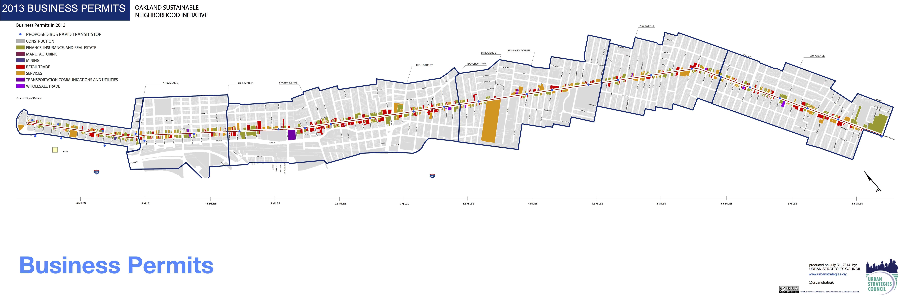

Moving from Paper Maps:
Delivering a better product

TO

Assignment:
Anaylze the impact of a propsed Bus Rapid Transit Line on existing land uses on the International Blvd corridor, Oakland, CA
The Challenge:
Collect Pertinent Data
Find Potential Impact
Produce Visualizations (Charts & Maps)
Present Findings
Added Difficultly to This Challenge:
Processing this amount of information
Making presentation easy to digest
Make data publically available and not just sitting on a self
Remove gatekeeping barriers
Move beyond paper maps
My Solution:
Create the standard set of maps and charts

Dumping and Blight
Violent Crime
- 
caption text
Implementation of Solution:
Full Interactive MapSuccess:
Processed all the information
Made data publically available
Creates an interactive environment that does not overwhelm the audience
Reduce staff time & resources fielding questions
Reduce miscommunication
Moved beyond paper maps